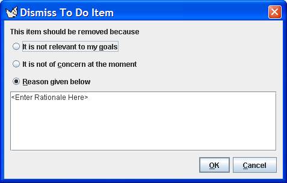

ArgoUML Dismiss To Do Item Dialog

ArgoUML's Dismiss To Do Item Dialog allows you to permantly remove
a "to do" item from the list shown in the To Do Pane.
The dialog presents you with three options:
- Dismiss the selected "to do" item because it is not relevant to
your design goals. This will open the Design Goals Dialog to allow you to
refine your goals for the design. If you change the goals that this critic
supports, the current "to do" item will be removed.
- Dismiss the selected "to do" item because it is not of concern
at the moment. This will open the Design Issues Dialog to allow you to specify
the design issues that you are currently working on. If you change the
priority of the decision that this critic supports to zero, the "to
do" item will be removed.
- Dismiss the selected "to do" item because of the reason given in
the text area below. This will remove the selected item from your "to
do" list and add an entry in the design history.
Back to ArgoUML Tours
Back to ArgoUML Home